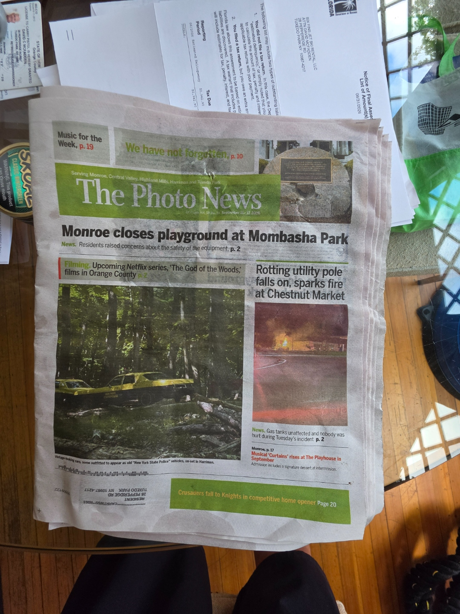

What prompted the proposal
The Mayor’s public message connected the proposed Chapter 51 change to an online listing of the McFaddens’ historic boathouse as a possible photoshoot location.
Our historic boathouse · Your property rights
David and Robin McFadden are fighting to preserve the right to host occasional, owner-approved photoshoots at their historically restored Tuxedo Park boathouse—and to prevent a broad new restriction from diminishing the rights of every property owner.

Start here · Two-minute overview
We support reasonable restrictions on short-term residential rentals. This dispute concerns a very different activity: an owner-approved, temporary photoshoot at a private property where no lodging, tenancy, overnight occupancy, or unrestricted access is offered.
The Mayor’s public message connected the proposed Chapter 51 change to an online listing of the McFaddens’ historic boathouse as a possible photoshoot location.
A rule written for “all property” could extend beyond one boathouse to other boathouses, docks, clubs, institutions, photographers, creators, and ordinary owners.
Publish the complete language, identify the documented public-welfare concern, allow meaningful review, and use objective standards directed at actual impacts.
An important distinction
A professional location listing allows photographers, brands, magazines, and other clients to consider a property for a scheduled, temporary, owner-approved photography session.
Any compensation is a limited location fee. It does not provide lodging, overnight occupancy, tenancy, exclusive possession, or unrestricted access to the property.
Read Exhibit B: rental law and photoshoot distinctionWhy this matters beyond one property
Residents already carry significant property taxes and the long-term consequences of Village spending, debt, infrastructure needs, and the use of reserves. Before adding another broad restriction, the Board should consider the cumulative effect on ownership, preservation investment, marketability, and property values.
The proposal may reach separately assessed boathouses and docks, including facilities associated with the Tuxedo Club and other lakefront owners.
Photographers, designers, publications, real-estate professionals, and compensated social-media creators could face uncertainty under language untethered to measurable impacts.
Rules broad enough to reach any commercially connected image could create unintended consequences for clubs, events, publications, and promotional activity.
A restriction initially associated with one property establishes a rule and precedent that may later be applied to others. Clear, uniform, prospective standards protect everyone.
Separate record · Sony Pictures Television / Netflix
As described in correspondence submitted to the Board, Gail’s private property was under consideration as a location for The God of the Woods, a Sony/Netflix production. The Board stalled and did not act before the production deadline, causing the opportunity for her property—and the Village—to be lost.
The Photo News later reported that the Netflix mystery series moved forward at locations throughout Orange County, including Harriman State Park, Bear Mountain State Park, Liberty Street in Newburgh, and Tuxedo. The article described thousands of extras and their families, together with cast, crew, and production personnel, supporting local jobs and businesses.
“The production … is bringing real economic activity to our region.”— Assemblyman Karl Brabenec, quoted by The Photo News
This history shows why Chapter 51 needs objective standards, reasonable deadlines, and written decisions. Delay can have the same practical effect as a prohibition.


Related community record
These external links provide the related TPFYI editorial and its collection of Village Board publications.
A reasonable alternative
Comparable New York communities use permits, thresholds, conditions, and enforcement directed at external effects. Tuxedo Park can protect residential character while allowing peaceful, low-impact activity.
The public record
The materials below are organized so residents can begin with the summary and then review the correspondence, exhibits, records, and procedural guidance supporting the discussion.
How to participate
This site is not asking anyone to sign a form letter, repeat someone else’s language, or adopt the McFaddens’ conclusions. It asks residents to examine the proposed law and source materials, consider the possible effects, and decide for themselves.
Make your voice part of the record
Use this form to share your own views about Chapter 51 and private-property rights. Your message will be sent to Mayor Marc Citrin, Trustees Michele Lindsay, Joshua Scherer, Matthew Tinari, and Jedediah Turner, and the Village Clerk.
Please write in your own words. Your name, property address, email address, and message will be delivered to public officials and may become part of the Village’s public record.
{kind=link}